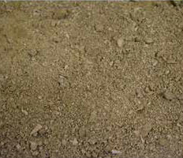
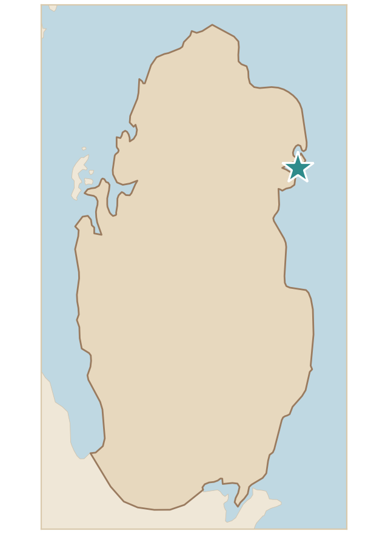

تربة رملية بها بقايا محارات بحرية تنمو بها السويدة والهرم والنباتات الملحية الأخرى، وتحتوي على حبيبات صغيرة جدًا متجانسة الحجم، ولونها بني فاتح، مما يشير إلى رمليتها ووجودها قرب الساحل.
Sandy soil with remains of marine shells, in which suaeda (Suaeda spp.), harm (Zygophyllum qatarense) and other salt-tolerant plants grow. It contains very small grains of uniform size and is light brown, which indicates its sandiness and its location near the coast.